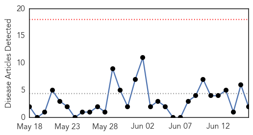
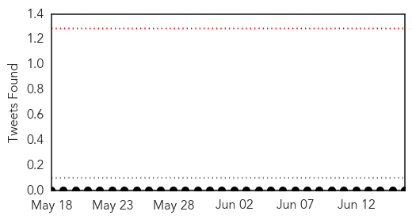
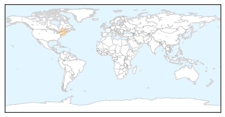
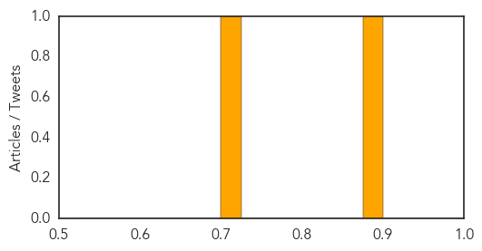

Meningitis
30-Day Web Trend
0 alerts, 0 warnings

30-Day Twitter Trend
0 alerts, 0 warnings

Article Locations
Article Confidences
Top Articles:
Top Tweets:
-
No tweets found for Jun 16, 2015
Ebola
30-Day Web Trend
0 alerts, 0 warnings

30-Day Twitter Trend
0 alerts, 0 warnings

Article Locations

Article Confidences

Top Articles:
- 1.000
- Why the WHO is failing us on killer diseases
- 1.000
- South Korea Tries Old Weapon to Fight MERS
- 0.999
- Applying the Lessons of Ebola
- 0.999
- Keep Liberia’s Border Closed: Travel Alert Not Enough as Virus Lingers
- 0.999
- South Korea Begins Experimental Treatment as MERS Claims 19th Victim
- 0.999
- Sierra Leone: Mothers Refuse to Vaccinate Children for Fear of Resurgent Ebola
- 0.998
- Liberia makes travel alert
- 0.998
- Ebola lurked in doctor's eye
- 0.998
- As death toll hits 19, World Health Organization says MERS outbreak is slowing
- 0.996
- Ebola could hit again
- 0.996
- Fighting MERS, again
- 0.995
- UIHC spent more than $641,000 on Ebola response
- 0.991
- S'pore nurse joined fight against Ebola, news, Health News, AsiaOne YourHealth
- 0.989
- Médecins Sans Frontières head criticises G7 for lack of urgency over Ebola
- 0.983
- Vaccines & Viruses: Ebola makes a comeback
- 0.981
- [SUPER RICH] BridgeCrest Medical helps fight disease with big data
- 0.976
- UTMB named regional Ebola treatment center
- 0.973
- Panel to discuss ongoing ebola crisis
- 0.969
- Prague gets first suspected MERS case - PRAGUE POST
- 0.966
- Brighton and Hove News Ebola research earns grant funding for Brighton academics
- 0.951
- Doctor who fought Ebola inspires Academy of Notre Dame grads
- 0.930
- The ‘Village’ Honors 3 Doctors, Politician for Ebola Fight
- 0.923
- Guam Airport Ready For MERS Virus Cases
- 0.906
- GAAS in Shock Over Dangerous Ebola Vaccine Trials
- 0.900
- Ellen applauds G7 Summit’s success
- 0.879
- Responding to psychological needs of Ebola Orphans - Sierra Leone
- 0.862
- Researchers look into the role that news media plays in causing public panic during high profile crises
- 0.856
- South Korean begins experimental MERS plasma trial, considers economic stimulus
- 0.828
- Giving New Life to Farms in Ebola-Affected Countries
- 0.816
- Drugs: PA Public Health Crisis - Story
- 0.767
- MoH to start sensitisation exercise Thursday
- 0.748
- Bill Gates on the need for a medical corps
- 0.743
- Global Emergency Overview Snapshot 10–16 June 2015 - World
- 0.735
- S. Leone: As Ebola Crisis Wanes, A Mixed Picture of Economic Recovery
- 0.721
- Ebola Vaccine Trial in Ghana: Nationwide Sensitization starts on Wednesday -
- 0.712
- As Ebola Crisis Wanes, a Mixed Picture of Economic Recovery for Households in Sierra Leone
- 0.667
- Parliament summons Alex Dodoo over Ebola attack
- 0.657
- Giving New Life to Farms in Ebola-Hit Countries - Sierra Leone
- 0.623
- WTVM.com-Columbus, GA News Weather & Sports
- 0.622
- Bill Gates just made an alarming point about what could 'kill 10 million people in the next 30 years'
- 0.552
- ‘It is unsafe to undertake Ebola vaccine trial’
- 0.546
- Bo Chief Appeals for Better Health Facility « Awoko Newspaper
- 0.545
- President Koroma Reaffirms Commitment to the Implementation of the APRM National Programme of Action (NPOA)
- 0.527
- Guelph firm PlantForm making great strides in fight against Ebola Sudan
- 0.523
- Ebola survivor Nancy Writebol is returning to Liberia to work in the same hospital where she contracted the deadly disease
- 0.506
- Sudan Vision Daily
Top Tweets:
- 0.950
- UIHC spent more than $641000 on Ebola response - KCRG http://t.co/lGTgF2FHfn ebola EVD
- 0.894
- Ebola Update: 27,275 confirmed, probable & suspected cases reported in 3 most affected countries, with 11,149 deaths. EbolaResponse
- 0.872
- RT: In past 4 weeks, Guinea reported 9-13-16-10 Ebola cases, Sierra Leone 3-12-15-14.Every single case is worrying, but at least n…
- 0.866
- Sierra Leone: Mothers Refuse to Vaccinate Children for Fear of Resurgent Ebola - Breitbart News http://t.co/7rndZNtA4Z ebola EVD
- 0.855
- Guelph firm PlantForm making great strides in fight against Ebola Sudan - Guelph Mercury http://t.co/E5RauQYWb1 ebola EVD
- 0.794
- Spike in West Africa Ebola Cases Shows Need to Address Underlying Health ... - Roll Call http://t.co/I3cvz3Jbyw
- 0.791
- ALERT- Ebola: WHO Reports Spike in Cases in Guinea and Sierra Leone http://t.co/M8fCH99IFh Makehealth happen Africaagainstebola
- 0.734
- Médecins Sans Frontières head criticises G7 for lack of urgency over Ebola - The Guardian http://t.co/Exda68Iy8E ebola EVD
- 0.729
- Parliament summons Alex Dodoo over Ebola attack - Starr 103.5 FM http://t.co/wjWNRMMcRC ebola EVD
- 0.649
- 16 June - news overview on avianflu avianinfluenza Ebola EbolaResponse MERS http://t.co/YdtDygfZEW
- 0.645
- UIHC spent more than $641000 on Ebola response - The Gazette: Eastern Iowa Breaking News and Headlines http://t.co/TMMyI2r1ZS ebola EVD
- 0.609
- Ebola Still Scares Congress, and They're Pushing More Spending to Fight ... - National Journal http://t.co/MGVzZB8CL1 ebola EVD
- 0.597
- Ebola that lurked in doctor's eye shares story - http://t.co/qQtMzNCBst http://t.co/vprmFltsjt ebola EVD
- 0.546
- How can the world prepare for a future epidemic -- the next Ebola? forbes400summit http://t.co/vEdXYQ09x5 Makehealthhappen
- 0.538
- RT: June a worse month than May for Ebola virus disease in SierraLeone http://t.co/hrK7n4acG9 http://t.co/c4t9whh53D
- 0.509
- SierraLeone. The Socio-Economic Impacts of Ebola in Sierra Leone - Round 3 http://t.co/hJfbzrOzHQ
- 0.509
- Number 1 lesson learned from the Ebola crisis = need for substantial measures to keep us safe from the next pandemic http://t.co/2SMPdPD69O